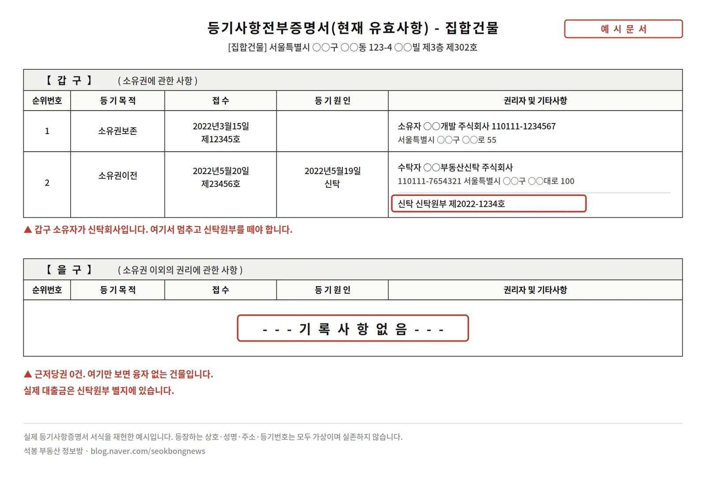
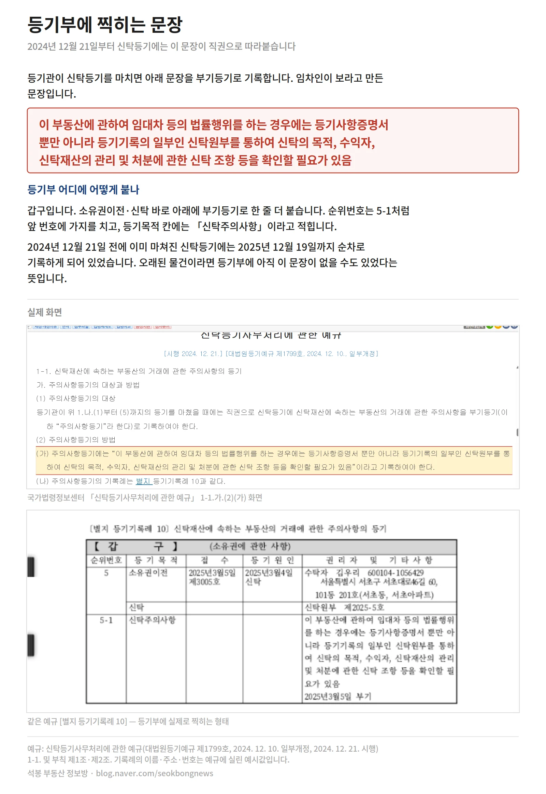
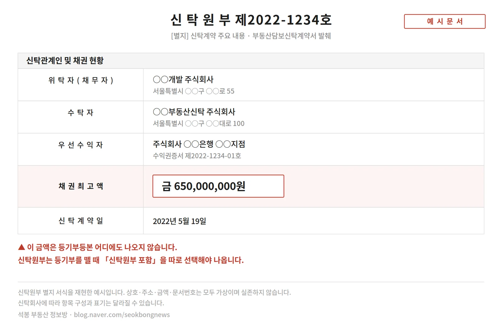
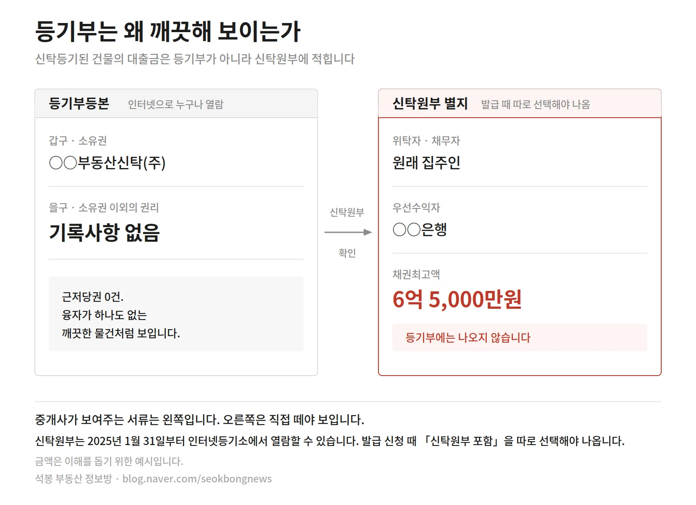
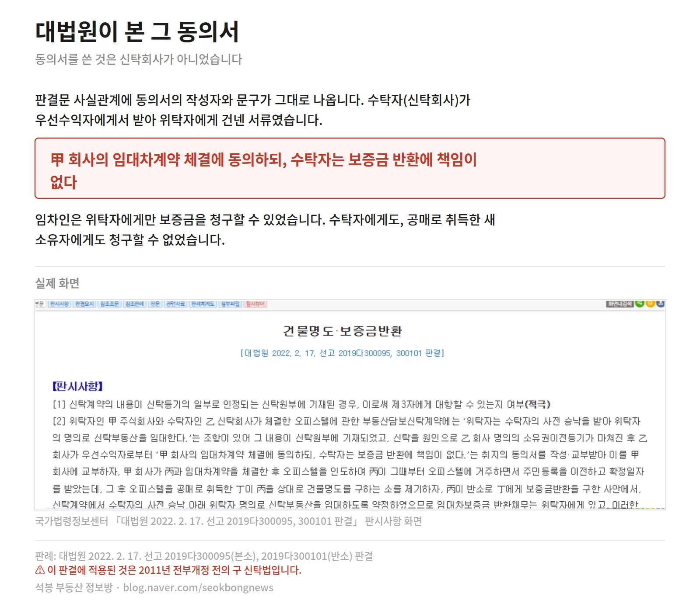
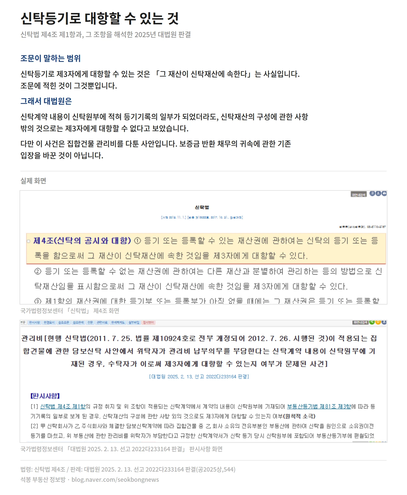
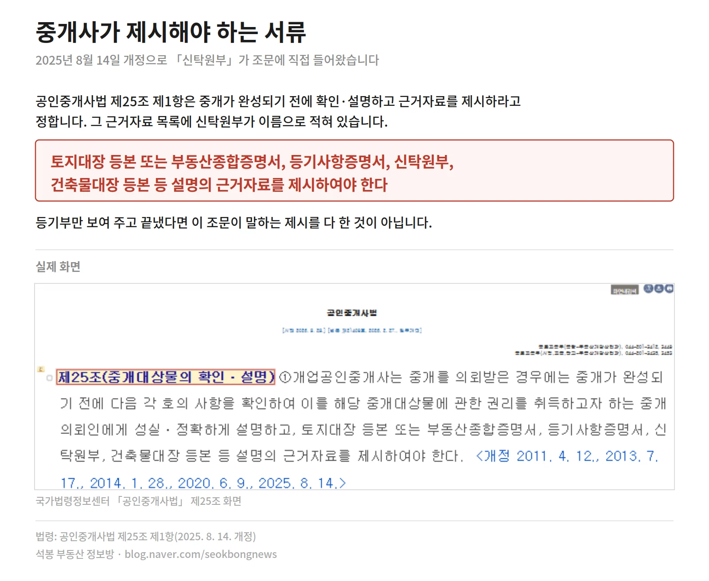

⚖️ 이 글에 인용한 판례는 판결문 원문을 확인하고 썼습니다. 직접 보실 수 있게 아래에 링크를 답니다. 다만 이 글은 법률 자문이 아니니, 실제 계약의 법률 검토는 변호사를 통해서 받으십시오.
📄 대법원 2019다300095 · 대법원 2022다233164
링크가 열리지 않으면 사건번호로 검색하셔도 됩니다.
아래 대화는 실제 피해 유형을 바탕으로 재구성한 상황극입니다. 등장인물은 가상이고, 뒤에 붙는 제도와 판례는 전부 실제입니다.
장면
등기부 을구는 깨끗했고, 신탁회사 도장이 찍힌 동의서도 진짜였고, 전입신고와 확정일자도 제때 했습니다. 그런데 보증금은 사라졌습니다. 중개사가 한 말 중에 명백한 거짓말은 하나도 없었습니다.
"사장님, 이 집 보러 오신 분 중에 제일 빨리 결정하시겠네."
중개사가 등기부등본을 책상 위로 밀었다. 손끝으로 아래쪽을 짚는다.
"을구 보세요. 기록사항 없음. 근저당 하나도 없어요. 요즘 이런 물건 잘 없습니다."
깨끗했다. 정말로 아무것도 없었다.
"근데 갑구에 신탁회사 이름이 있던데요. 밑에 뭐라고 주의사항 같은 것도 적혀 있고."
"아, 그거요." 중개사가 웃었다. "신탁 걸린 건물은 다 저렇게 찍혀요. 법이 바뀌어서 기계적으로 들어가는 문구입니다."
"저 문구 하나 때문에 놀라시는 분들 많은데, 신축은 거의 다 신탁 껴 있어요. 오히려 신탁회사가 관리하니까 개인 집주인보다 낫죠."
"그래도 집주인이 신탁회사면 계약은 누구랑 하나요?"
"좋은 질문이세요." 중개사가 서류 한 장을 꺼냈다. "그래서 이걸 미리 받아뒀어요. 신탁회사 임대차 동의서."
"신탁사가 도장 찍어서 계약해도 된다고 확인해준 겁니다. 저희도 이거 없으면 계약 안 시켜요."
도장이 선명했다. 회사 이름도 들어본 곳이었다.
"전입신고랑 확정일자는요?"
"당연히 하셔야죠. 이사 당일에 바로. 그럼 법적으로 완벽하게 보호받으십니다."
계약금을 넣었다. 잔금을 치렀다. 전입신고를 했고, 확정일자도 받았다.
1년 뒤, 건물이 공매로 넘어갔다.

가입하시면 지역 시장조사 보고서(약식)를 2회 무료로 요청하실 수 있습니다.
여기서 이미 끝났습니다
주의사항 문구는 정말로 등기관이 직권으로 찍는 것이고, 동의서의 도장도 진짜였습니다. 사실이 아닌 말이 없었습니다.
그래서 이 유형이 무섭습니다. 거짓말을 골라내면 되는 게 아니라, 맞는 말만 듣고도 당합니다.
서명하기 전에 결과는 이미 정해져 있었습니다. 그 사람이 보지 않은 것은 서류 한 장이었습니다.
등기부는 이미 경고하고 있었습니다
2024년 12월 21일부터 제도가 하나 생겼습니다. 신탁등기가 된 부동산에는 등기관이 직권으로 주의사항등기를 기록합니다. 등기예규가 문장까지 정해 놓았습니다.
이 부동산에 관하여 임대차 등의 법률행위를 하는 경우에는 등기사항증명서 뿐만 아니라 등기기록의 일부인 신탁원부를 통하여 신탁의 목적, 수익자, 신탁재산의 관리 및 처분에 관한 신탁 조항 등을 확인할 필요가 있음
등기관이 골라 쓰는 말이 아닙니다. 예규에 적힌 그대로 찍힙니다.
붙는 자리는 갑구입니다. 소유권이전·신탁 아래에 순위번호 5-1처럼 가지를 친 부기등기로 한 줄 더 들어가고, 등기목적 칸에는 「신탁주의사항」이라고 적힙니다.

2024년 12월 21일 전에 이미 마쳐진 신탁등기에 대해서도 2025년 12월 19일까지 직권으로 기록하도록 정해 두었습니다. 즉 요즘 신탁 물건 등기부를 떼면 경고가 찍혀 있습니다. 중개사 말대로 자동으로 들어가는 문구가 맞습니다.
문제는 그다음입니다. 경고를 읽고 신탁원부까지 뗐어도 이 사람은 당했을 수 있습니다. 이 글의 요점이 거기 있습니다.
을구가 비어 있는 이유
신탁등기가 되면 소유권이 신탁회사로 넘어갑니다. 갑구 소유자가 신탁회사로 바뀌죠. 그리고 대출은 근저당이 아니라 신탁 구조 안에서 잡힙니다.
그래서 을구가 비어 있습니다. 무융자 건물처럼 보입니다.
실제 대출금은 신탁원부 별지에 있습니다. 채무자는 위탁자, 즉 원래 집주인이고, 돈을 빌려준 쪽이 우선수익자로 적혀 있습니다.

한 가지 짚어두면, 신탁원부는 2025년 1월 31일부터 인터넷등기소에서도 열람할 수 있게 됐습니다. 등기소까지 갈 필요는 없어졌어요. 다만 발급 신청할 때 「신탁원부 포함」을 따로 선택해야 나옵니다. 그냥 등기부만 떼면 이 내용은 안 보입니다.

진짜 함정은 신탁원부 안에 있습니다
대부분의 신탁계약서에는 이런 취지의 조항이 들어갑니다. 신탁계약 체결 후 신규 임대차는 수탁자의 사전 승낙을 조건으로 위탁자 명의로 체결하고, 보증금 반환의무는 위탁자가 진다.
문장 하나입니다. 그런데 이 문장이 보증금을 누가 돌려주는지를 정합니다.
동의서는 보호 장치가 아닙니다
신탁사 동의서도 같은 얘기를 합니다. 회사마다 문구는 달라도 실무에서 보는 뼈대는 비슷합니다.
- 위탁자와 임대차계약을 체결해도 된다
- 보증금과 월세는 위탁자에게 입금해도 된다
- 계약이 끝나면 보증금 반환의무는 위탁자에게 있다
- 임대차계약 체결에 동의했을 뿐, 그 외에는 신탁회사와 무관하다
앞의 두 줄만 읽으면 허가증처럼 보입니다. 뒤의 두 줄이 진짜 내용입니다.
이 문서는 "계약해도 된다"는 승인이 아니라 "우리는 책임지지 않는다"는 각서에 가깝습니다.
대법원은 이 구조를 어떻게 봤나
대법원 2022년 2월 17일 선고 2019다300095, 300101 판결. 신탁계약에서 수탁자의 사전 승낙 아래 위탁자 명의로 임대하기로 약정했고, 그 약정이 신탁원부에 적혀 있던 사건입니다.
대법원은 보증금 반환의무가 위탁자에게 있다고 봤습니다. 그리고 그 약정이 신탁원부에 기재됐으므로 임차인에게도 대항할 수 있다고 판단했습니다.
결론은 이렇습니다. 임차인은 위탁자를 상대로만 보증금을 청구할 수 있습니다. 수탁자에게도, 그 수탁자로부터 부동산을 사들인 새 소유자에게도 청구할 수 없습니다.
그 사건에서 오간 동의서에는 이렇게 적혀 있었습니다.
위탁자의 임대차계약 체결에 동의하되, 수탁자는 보증금 반환에 책임이 없다
동의서를 쓴 것은 신탁회사가 아니라 1순위 우선수익자인 은행이었습니다. 신탁회사는 그것을 받아 위탁자에게 건넸고, 위탁자가 그 서류를 들고 임차인과 계약했습니다.

위탁자는 이미 돈이 없어서 건물이 넘어간 겁니다.
보증금 반환 외에 대해서는 결론이 다릅니다
대법원 2025년 2월 13일 선고 2022다233164 판결. 이 판결은 개정 신탁법(2012. 7. 26. 시행)이 적용되는 사안에서, 신탁의 등기로는 그 재산이 신탁재산에 속한다는 점을 제3자에게 대항할 수 있을 뿐, 신탁계약의 내용까지 대항할 수는 없다고 판단했습니다.
다만, 신탁계약의 내용에 대해서도 신탁계약과 공시가 개정법 시행 전에 이뤄진 사안이라면 구 신탁법과 과거 판례가 적용될 수 있습니다.

이 사건은 집합건물 관리비 납부 의무를 다툰 사안으로, 위탁자와 체결한 임대차보증금 반환 채무의 귀속에 관한 기존 법원 입장을 변경한 것은 아니라는 점을 유념하시기 바랍니다. 임차인은 계약 당사자인 위탁자에게 보증금 반환을 청구해야 하며, 수탁자에게 직접 반환을 청구할 수 없다는 기존 결론은 동일하게 유지됩니다.
중개사는 책임이 없을까
있습니다. 근거는 공인중개사법에 있습니다.
제25조 제1항은 중개가 끝나기 전에 권리관계를 확인해 성실하고 정확하게 설명하고 근거자료를 제시하라고 정합니다. 그 근거자료 목록에 신탁원부가 이름으로 들어가 있습니다. 2025년 8월 14일 개정으로 들어간 문구입니다.
등기사항증명서만 떼어 와 보여주는 것으로는 부족하다는 뜻입니다. 신탁 물건이면 신탁원부까지 떼어 제시해야 합니다.

그리고 제30조 제1항은 중개행위를 하면서 고의나 과실로 거래당사자에게 재산상 손해를 입혔다면 그 손해를 배상할 책임이 있다고 정합니다.
동의서를 받아왔다는 말은, 그 동의서가 진짜인지 확인했다는 뜻이 아닙니다.
그래서 어떻게 확인하나
계약 전에 이 순서대로 하세요.
- 등기부 갑구를 먼저 봅니다. 소유자 자리에 신탁회사 이름이 있고 주의사항등기가 찍혀 있으면, 그건 형식적인 문구가 아니라 다음 단계로 가라는 신호입니다.
- 「신탁원부 포함」으로 다시 뗍니다. 인터넷등기소에서 됩니다. 발급 신청할 때 따로 선택해야 나옵니다.
- 별지에서 채권 규모를 확인합니다. 우선수익자와 채권최고액을 건물 가치와 비교하세요. 건물 가치는 인근 실거래로 어림합니다.
- 임대차 조항을 찾아 읽습니다. 누가 임대할 권한이 있는지, 보증금은 누구에게 내는지, 반환의무는 누가 지는지. 이 세 가지가 핵심입니다.
- 동의서의 뒷문장을 읽습니다. "반환의무는 위탁자에게 있다"는 취지의 문구가 있는지 확인하세요. 있다면 그 문서는 보호 장치가 아닙니다.
- 동의서 진위를 신탁회사에 직접 확인합니다. 중개사가 가져온 서류를 그대로 믿지 마세요.
3번의 「건물 가치」는 인근 실거래로 어림합니다. 앞의 대법원 사건도 오피스텔이었습니다. 계약월 2026년 6월부터 8월까지 서울에서 신고된 오피스텔 매매는 2,535건이고, 서초구 서초동 208건, 구로구 구로동 195건, 송파구 문정동 103건 순으로 많았습니다. 지도에서 동 단위로 확인하시면 됩니다.
남기는 말
「전세사기피해자법」 제정 이후 피해자로 결정된 건수는 누적 4만 936건입니다. 이 중 97.6퍼센트가 보증금 3억 원 이하, 60.7퍼센트가 수도권이었습니다.
큰돈을 굴리던 사람들이 아닙니다. 전 재산이 보증금 하나였던 사람들입니다.
제도는 분명히 나아졌습니다. 등기부가 먼저 경고하고, 신탁원부도 집에서 볼 수 있게 됐습니다. 그런데도 앞의 대화에서 그 사람이 놓친 건 서류를 못 구해서가 아닙니다. 보여주는 서류만 봤다는 것입니다.
경고 문구는 읽으라고 찍혀 있는 겁니다.
이 글은 실무자의 시선에서 정리한 것입니다. 법률 자문이 아니며, 인용한 판례와 제도는 사실관계에 따라 적용이 달라집니다. 계약을 앞두고 계신다면 법률 검토는 반드시 변호사를 통해서 받으시기 바랍니다.
법률 검토: 청원 법률사무소 윤영준 변호사
판례: 대법원 2022. 2. 17. 선고 2019다300095·300101, 대법원 2025. 2. 13. 선고 2022다233164(공2025상,544)
제도: 주의사항등기(신탁등기사무처리에 관한 예규, 대법원등기예규 제1799호, 2024년 12월 21일 시행)와 신탁원부 인터넷등기소 열람(2025년 1월 31일). 대법원 2024년 12월 19일 보도자료. 공인중개사법 제25조·제30조
통계: 국토교통부 2026년 9월 7일 보도자료 「8월중 전세사기피해자등 658건 추가 결정」 참고1(2026년 8월 31일 기준 누계). 누적 4만 936건, 보증금 3억 원 이하 97.6퍼센트, 수도권 60.7퍼센트. 오피스텔 매매는 국토교통부 실거래 계약월 2026년 6월~8월 서울 2,535건
⚠️2022다233164는 집합건물 관리비 사건입니다. 보증금 반환 채무의 귀속에 관한 기존 입장을 바꾼 판결이 아닙니다. 투자 권유가 아닙니다.